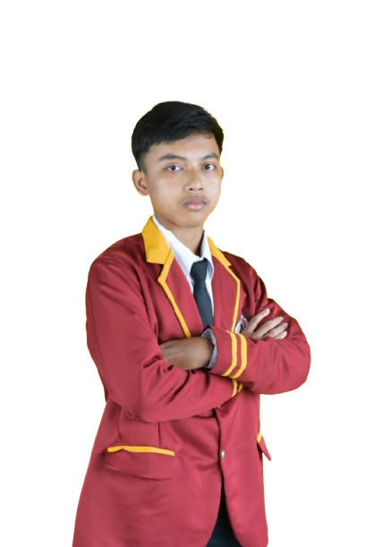

01
Frontend
Membuat struktur dan tampilan halaman web.
Sedang dikembangkan
INFORMATICS STUDENT · WEB DEVELOPER
LOADING PORTFOLIO
Halo, perkenalkan saya
Mahasiswa S1 Informatika Universitas Teknokrat Indonesia yang tertarik pada pengembangan web, desain antarmuka, dan teknologi yang dapat membantu menyelesaikan masalah sehari-hari.
FIGO_PROFILE.EXE

01 / TENTANG SAYA
Saya menempuh pendidikan S1 Informatika di Universitas Teknokrat Indonesia, Lampung.
Saya tertarik mempelajari pengembangan web dari sisi tampilan maupun proses di baliknya. Saya ingin terus meningkatkan kemampuan dalam membangun website yang responsif, mudah digunakan, dan memiliki struktur kode yang rapi.
Saat ini saya mengembangkan keterampilan HTML, CSS, Tailwind CSS, JavaScript, PHP, Laravel, dan MySQL melalui perkuliahan serta proyek latihan.
Lihat proyek saya →Belajar membangun antarmuka responsif dan fungsional.
Memperhatikan struktur informasi dan kenyamanan pengguna.
Terbuka untuk masukan, tantangan, dan kolaborasi.
02 / KEAHLIAN
Kategori skill di bawah ini dapat diperbarui seiring bertambahnya pengalaman.
Membuat struktur dan tampilan halaman web.
Mempelajari logika aplikasi dan pemrosesan data.
Mengenal penyimpanan dan pengelolaan data.
Alat bantu untuk desain dan pengembangan.
Catatan: indikator merupakan gambaran belajar pribadi, bukan hasil sertifikasi atau penilaian resmi.
03 / PROYEK PILIHAN
Gunakan filter untuk melihat kategori proyek. Tautan demo dan repository bisa diganti setelah tersedia.
Konsep aplikasi untuk membantu pengguna menemukan layanan perbaikan rumah dan mengirim detail pemesanan.
Eksplorasi tampilan aplikasi penjualan dengan fokus pada navigasi yang jelas dan pengalaman pengguna.
Landing page responsif untuk memperkenalkan profil, menampilkan keahlian, proyek, dan informasi kontak.
Penting: kartu ini menggunakan ilustrasi dan tautan contoh. Ganti dengan screenshot, demo, dan repository asli milikmu sebelum dikumpulkan.
04 / PENDIDIKAN & PENGALAMAN
Mempelajari dasar pemrograman, pengembangan aplikasi, basis data, analisis sistem, dan teknologi informasi melalui perkuliahan serta tugas proyek.
Menyusun antarmuka aplikasi, mengorganisasi kode berdasarkan folder, dan mempelajari alur data pada fitur profil serta pemesanan jasa.
Mengembangkan ide, wireframe, dan konsep visual untuk aplikasi dengan mempertimbangkan kebutuhan pengguna.
Silakan tambahkan nama SMA/SMK, tahun pendidikan, organisasi, magang, atau kepanitiaan yang benar-benar pernah diikuti.
05 / SERTIFIKAT & PENCAPAIAN
Bagian ini disiapkan untuk mencantumkan bukti pelatihan, seminar, sertifikasi, atau lomba.
Penerbit: Isi nama lembaga penerbit
Ganti bagian ini dengan nama pelatihan dan keterampilan yang dipelajari.
Tambahkan detail →Penerbit: Isi nama lembaga penerbit
Ganti bagian ini dengan kegiatan, penyelenggara, dan tahun yang sesuai.
Tambahkan detail →Dua kartu di atas adalah placeholder, bukan klaim sertifikat yang sudah dimiliki. Isi dengan data yang benar atau hapus jika belum ada.
06 / KONTAK
Isi formulir berikut untuk menyiapkan pesan. Versi frontend ini akan membuka aplikasi email perangkatmu; belum menyimpan pesan ke database.
Lampung, Indonesia